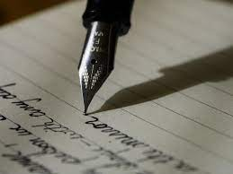
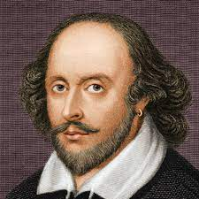

Why I Write
I mostly write song lyrics or poems because I enjoy writing without worrying about academic vocabulary or sentence structure. I believe that I have had an ample amount of practice with writing in an academic tone and after starting my creative writing portfolio in high school, I was reminded of how much I enjoy creative writing. It was difficult for me to express original thoughts in my writing, as I was accustomed to writing to prove an argument with evidence from books or other sources. I took advantage of the freedom that I found with the writing portfolio and explored genres that I rarely have the opportunity of writing in to test my skills as a writer. I think that if there is any amount of passion or genuine interest in a subject, writing does not become a burden, but instead serves to be an entity of silent, nonverbal opinion; writing is something that I value in my life because I find that it is much easier to synthesize my thoughts through this form of communication and do so without fear of making a mistake, which can often happen when sharing ideas verbally.
Over the summer, I plan to record my experiences with people and places that I discover in Turkey and France to be able to reflect about this time in my life in the future. As a final thought, I would like to share that writing holds a sentimental importance to me and that I will continue to write for myself and my personal enlightenment, regardless of whether or not points are attached. Some examples of my poems are posted below, and I divide my poetry into various themes, such as life, love, and politics.
A link to my poetry portfolio I made in high school:Poetry & Peace
Romantic Poems
A Shakespearean sonnet is a variation on the Italian sonnet tradition. The form evolved in England during and around the time of the Elizabethan era. These sonnets are sometimes referred to as Elizabethan sonnets or English sonnets.
Although Shakespeare’s sonnets have prominently endured for centuries, he was hardly alone in his embrace of this poetic style. Many prominent English poets of the day, from John Donne to John Milton, also wrote sonnets.
Shakespearean sonnets feature the following elements:
1. They are fourteen lines long.
2. The fourteen lines are divided into four subgroups.
3. The first three subgroups have four lines each, which makes them “quatrains,” with the second and fourth lines of each group containing rhyming words.
4. The sonnet then concludes with a two-line subgroup, and these two lines rhyme with each other.
5. There are typically ten syllables per line, which are phrased in iambic pentameter.
Ode to Life - Sonnetfest
My calming life, you inspire me to write.
How I love the way you surprise and hurt,
Invading my mind day and through the night,
Always dreaming about the introvert.
Let me compare you to a hard sawdust?
You are more loving and more chaotic.
Wild heat toasts the dire frolics of August,
And summertime has the bad hypnotic.
How do I love you? Let me count the ways.
I love your excitement, nature and wind.
Thinking of your fond nature fills my days.
My love for you is the dreadful woodwind.
Now I must away with a soothing heart,
Remember my bright words whilst we're apart.
Reflective Poems
Reflective poetry or reflective poem is a genre of poetry in which the poet expresses his state of mind using images and symbols and compares them with real life objects and scenes. Thus a reflective poem is normally quite long and also thoughtful unlike lyric poetry which is short and expresses feelings. An example of reflective poem is “An Essay on Man” by Alexander Pope. Reflective poems contain some explicit or implicit generalisation about life, by the poet. Simply put, it is a mere reflection of the state of mind of the poet put forth in a poetic manner.
Mistakes
All this time I’ve been making mistakes
With my eyes closed, I have been looking
Time has passed and it’s been years since I’ve counted
I realize the people I call friends have been fooling
Everyone has taken away a piece of me
Some took my todays
Some took my tomorrows
Some, my hopes
And others, my sorrows
I thought the good would last forever
I’ve opened my heart for no reason, it seems
To the people I was there for, whenever
But I can’t say it’s been a waste of time
I’m alright, after all
I’ve just been a little hurt
Because I can still climb
And I still have my snowflake in the summertime

Favorite Poets
- Edgar Allan Poe
- Nazim Hikmet
- Rumi
- Homer
- William Shakespeare
Why Poetry Matters
- 1) Poetry matters because poets are special adepts with deeper insights than the rest of us. Very few poets have the cheek to bring up this old chestnut (its last major proponent was Shelley), but it lingers like a hangover in the heads of narcissistic types.
- 2) Poetry matters because it serves a therapeutic function in the lives of poets and their audiences. This idea has taken a lot of hits lately even from free-verse partisans, but it’s still operative in too many workshops and reading groups, where the majority of participants attend just to feel better.
- 3) Poetry matters because it tells us important stories. This is the key tenet of the Expansive Poetry Movement, which seems to be fixated on lengthy narrative. Almost anyone can tell a story, but very few persons can be poets.
- 4) Poetry matters because it speaks to all mankind, as a form of universal language. Since poems are composed in particular languages, while the vast majority of persons are monoglots, this is really a surreptitious way of saying that only content matters in poetry.
- 5) Poetry matters because it is a conversation about the world that allows us to build consensus. This belief is nurtured by those who want poetry to serve some extra-aesthetic agenda, usually political. The word “conversation” is now a politically loaded term, and one should always be wary of it.
- 6) Poetry matters because it helps us to break the shell of our loneliness and alienation. This is a pious fantasy circulated by people who are not really poets, but would-be social workers. If you’re lonely, join a club. If you’re alienated, see a shrink.
- 7) Poetry matters because it allows us to speak with vatic authority to a world that needs guidance. This is pretty much the same as number one, except that the proponents of this formulation have a dangerous power-lust.